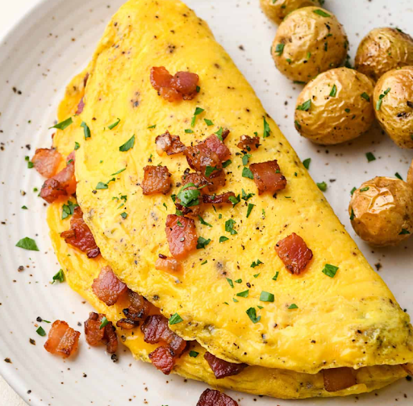

Sunny-side-up eggs are eggs only cooked on one side, leaving the yolk intact and runny. The dish is said to resemble the shining sun.

Omelettes are an incredibly personalizable and delicious dish. They can be stuffed with any ingredients you wish to fit many different palettes. There are several different omelette variations to explore. This recipe will walk you through the steps to cook a quick and easy american-style omelette.

Poached eggs are delicately cooked to achieve firm whites and a runny yolk. I promise this healthy, fat-free method of cooking eggs is quick and easy after getting the hang of the technique. A poached egg is perfect to eat by itself, or in addition to toast, egg benedicts, salad, and other dishes to spice up your breakfast. Yum!
If you're interested in finding even more tasty and reliable cooking recipes, then I have got your back. Check out some of these websites for all sorts of dishes(including more egg dishes)!